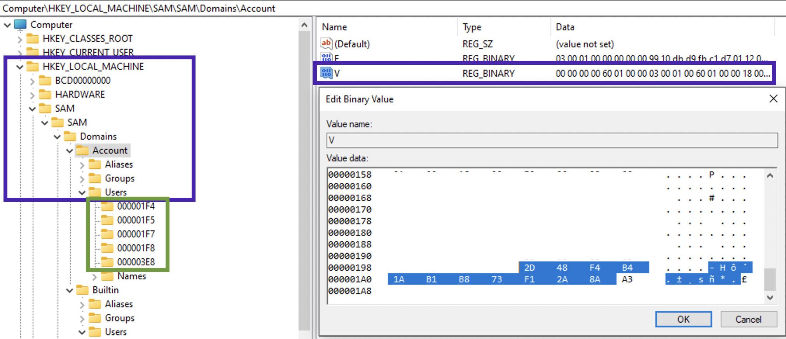
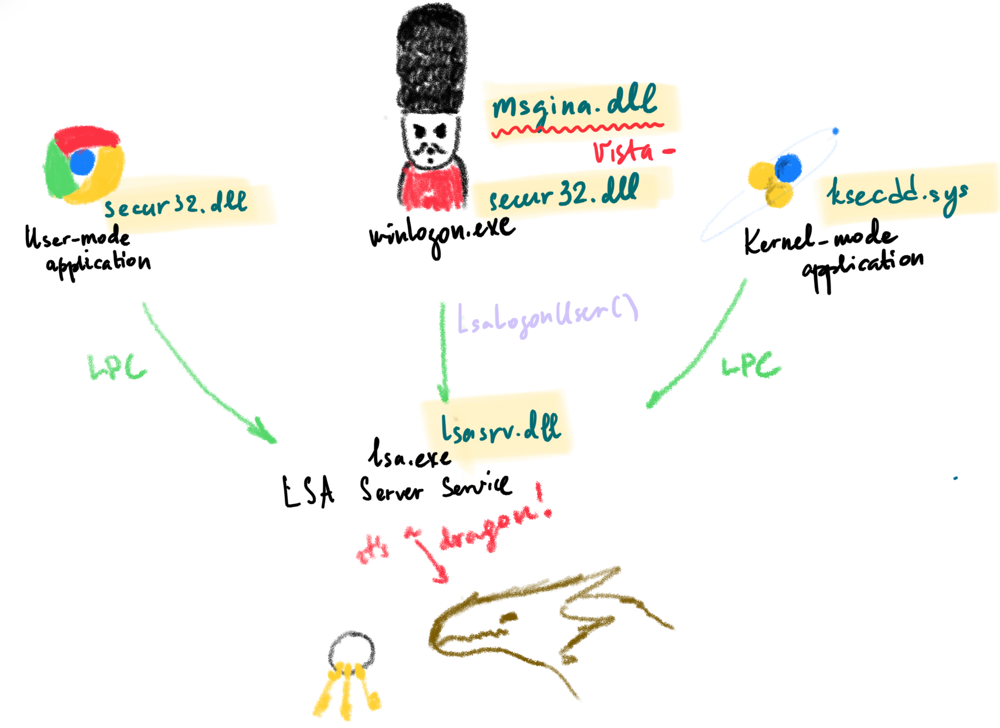

Each process in the system has an access token. This token determies what privileges this fellow has. This token consists of:
- User SID
- Group SID
- Integrity level (mandatory label). Vista+/WinServer 2008+. This label determines what privileges the process has based on the assigned accesses and groups.
- Logon session SID
- Token type (primary or impresonation)
- Impersonation level
- User privileges list
- Other
Checks:
- What is your mandatory label❓
- Compare this label to the object’s label.
- Take User and Group SIDs of the process and ACL of the object in question
SID
Below is the structure of a SID. SID, shortly speaking, is a user id. The actual ID of the user, is the RID (relative identifier) part.

In case Who created it? aka issuing authority ends with number 21, there will be a trailing SID which represendts PC or domain identifier (purple in the picture above). 1 - revision number, 5 - issuing autority, 21 - sub-issuing authority.
❗️Built-in accounts don’t have Unique domain identifier and RID.
To get a user’s SID:
wmic useraccount where name='veronicazvereva' get sid
# or
whoami /user # for current user
PC/domain ID can be viewed in SAM\SAM\Domains\Accounts, value V, last 12 bytes of the data chunk:

In order to translate this value, split the hex 12 byte value into three 4 byte chunks. Since these are little-endian, reverse the order of the bytes, convert each to decimal If this is a negative value, something is not right. It’s a 32-bit unsigned value! For example, in the below picture we see that the machine id is 2d 48 f4 b4 1a b1 b8 73 f1 2a 8a a3. Splitting into 3 chunks gives us: 2d 48 f4 b4, 1a b1 b8 73 and f1 2a 8a a3. Lets now convert each to little-endian: b4 f4 48 2d, 73, b8, b1, 1a and a3 8a 2a f1. Now, each set of 4 bytes in decimal: 3035908141, 1941483802, 2743741169. The resulting machine ID part of the SID is then: 3035908141-1941483802-2743741169. Let’s check in PowerShell:

In the picture above with the registry window the green square 🟩 shows the RIDs in hex. Given the RID one can deduce something about the user, since there are some users that have predefined RIDs:
S-1-5-21-X-X-X-500- default adminS-1-5-21-X-X-X-501- default guestS-1-5-21-X-X-X-1000- the first user created on a Windows 7 and below,S-1-5-21-X-X-X-1001- for newer systemsS-1-5-18- SystemS-1-5-3- batchS-1-5-2- networkS-1-5-21-544- local admin group
On the previous picture we can see that the RID is 1000, meaning it’s the first user account (surprisingly not 1001 since it’s a Windows 10 machine).
RID hijacking
System udentifies users by their RIDs (the last portion of SID), not by username. What happens if we have changed manually the RID of the guest user? Well, if we set it to 500, the system would treat him as default admin with all the corresponding rights.
Local Security Authority Subsystem (LSA)
Single Sign-on. LSA is its part. Responsible for authentication, authorisation. Manages derived credentials (NTLM, kerberos tickets, sessions, hashes etc).
Image file is located at %WINDIR%\System32.
Login Process
This is how a general picture looks like:

Sorry for the dragon 🐉.
Process Authorization
Each process, file or any other object has a set of requirement. In order for some process to get access, it needs to fulfill these requirements. At the same time, these processes have sort of passports or tickets 🎫 which they can use to get something or somewhere. Requirements are called security descriptors, and these “passports” are called access tokens. More information about the both can be found here and here.
Access tokens can have the following information (not limited):
- (SID) for the user’s account or/and a group and their privileges
- ID for current logon session - logon SID
- Owner SID
- The source of the access token
- Primary or impersonalisation token?
- Integrity level
Security Descriptors also have a set of fields in it:
- Integrity level
- SID of the owner or group
- DACL (list of users allowed and what they can do)
- SACL (list of access attempts that will generate alerts ⚠️)
SAM
Path to file 🛣️: C:\Windows\System32\config\SAM.
⚠️ This file cannot be edited through the RegEdit unless admin grants you permissions (data marked with red is not accesssible unless the access is granted by admin):

However, this file can be accessed on a dead-box system. ⚠️ Also, this file only stores local creds, not domain or Microsoft account credentials!
SAM is a database of files, and it stores all the information about all the users: login information, password hashes, group information.
🛠 Registry Explorer (Eric Zimmerman’s tool) can collect all user from the SAM and Profile files and show them assembled. This data can be exported to Excel, for example.
Local User Accounts
For each user there will be a separate sub-key under SAM\SAM\Domains\Account\Users. The sub-keys names are actually RID of the user in hex. Each sub-key will have several values. Record V contains static information (username, password length etc), while record F contains constantly updated information like timestamps 🕰:
- Last login is a little endian 8 byte value at
0x08-0x0foffset. - Last password change time at offset
0x18-0x1f, 8 bytes long. - Last failed logon time is at offset
0x28-0x2f, 8 bytes.
RID itself is stored here, in F record at offset 0x30-0x33 (little endian). Also, there is PasswordRequired (at 0x38). There several possible values for this nibble (half byte): 0 - account active + pass required, 1 - account is not active, 4 - any policies do not apply to this account.
🧪 I have
5on my machine, what does it mean?
Logon count is at 0x42-0x43 (two bytes).
The V value is more interesting. It contains usernames and hashes (NTLM). The user account name is at 0x1C0 offset (Unicode). What about the juicy stuff? I mean the password hashes. SAM file contains a 56-byte NTLM hash of the password, which is encrypted with a AES algo, the key 🔑 is stored in a system file. To decrypt the password, you’ll need both SAM and the system file. Password cracking methodology:
- Export SAM and SYSTEM hives from the forensic image/suspect machine.
- Unencrypt the hash stored in the SAM file (🛠
mimikatz). - Create a word list from the current case (may export from Autopsy, EnCase etc).
- Run a dictionary 📖 or brute-force attack 💪 against this NTLM hash (🛠:
hashcat🐈⬛ ,John the Ripper🔪, Cain and Able 🔪 🐏).
# decrypt the hashes:
mimikatz
> lsadump::sam /system:"path_to_SYSTEM" /SAM:"path_to_SAM"
# crach the hash with hashcat
Other values stored in this sub-key. ForcePasswordReset speaks for itself and SupplementalCredentials do not. There also can be a UserPasswordHint, sometimes contains the actual password. It also contains RID, which can be changed in RID hijacking attack. There is also a technique that allows resetting local account password by clearing lmpw_len (LM password hash length) and ntpw_len (NTLM password hash length) at 0x2c and 0x30 respectively [8].
Microsoft Accounts
Since Win8. Can be logged in if there is internet access. Profiles and settings are stored in the cloud ☁️. Additional values are stored in SAM: InternetUID and InternetUserName. Both are unique to the user. InternetUID is a 16 byte Unicode string. InternetUserName - usually an email used as a login.
Domain Accounts ⚠️
Key 🔑 : Software\Microsoft\Windows NT\CurrentVersion\ProfileList.
The key above will have a ProfileImagePath.
⚠️ SAM doesn’t have any informaiton about domain accounts! See more info in software section, domain accounts.
Deleted Accounts
🛠 Registry Explorer (Eric Zimmerman’s tool) shows deleted accounts. If the data was not overwritten, we will be able to get the information.
C:\Windows\System32\Config
LM hash
DES
- toupper(password)
- if len(password) < 14, pad with 0
- split in two parts and encrypt separately. WHY???
- concat
If the second part equals to AAD3B435B51404EE, the password is only 7 symbols long. ?
NTLM hash
DES + MD4 until SP3
NTLMv2
MD5
[username][sids][LM][NTLM]
[LM] is not generated if the password length is less then 15.
Passwords are not salted.
Accounts
Default local user account:
- Administrator
- Guest
- HelpAssistant
- DefaultAccount
Default system accounts (not visible for the user):
- SYSTEM
- NETWORK SERVICE
- LOCAL SEVICE
Active Directory
Moving accounts and auth policies to the server side. Azure Active Directory is when instead of having a physical server, you have a server in the cloud ⛅️. Defines a set of rules to restrict users’ access to resources. PCs that are part of AD usually don’t have full access to the systems.
AD DS store contains db files and processes that manage directory information for users, services and applications. Consists of Ntds.dit file, at %SystemRoot%\ NTDS folder on all DC. Is only accessible thtough the DC’s processes and protocols.
Class objects. What objects can be created in the dir (User, Computer).
Attribute objects. Info attached to an object (Display name).
Forests. Share common schema, config partition, global catalog, trusts between domains in the forest, Enterprise Admins and Schema Admins groups.
OU. Organisational Units. Containers with users, groups, computers or other OUs. Represent the org hierarchy and logically, manage objects in consistent way, delegate permissions and apply policies.
Trust. Directional (peer to peer) and Transitive (the friend of my friend is my friend).
Attacks & Investigation
LLMNR Poisoning. NBT-NS (former name). Used when DNS screws up. Uses NTLMv2 hash and username. ⚔️ Disable LLMNR (Turn off multicast name resolution) and NBT-NS. If these are needed: require network access control, strong user passwords (14+ chars).
SMB Relay. Resend the stolen hashes to the machines that can use them instead of cracking them. Pass the hash? SMB must be disabled for the attack to work, relayed creds are admin for the machine. nmap --script=smb2-security-mode.nse -p445 <IP range> to check for SMB with signing off. Use the tool ntlmrelayx.py tf targets.txt -smb2support -i (i for Interactive shell) along with the responder (HTTP and SMB off). Use nc <IP> <port> to connect to the open connection. ⚔️ Enable SMB signing, disable NTLM auth over network, local admin restriction ()
Default accounts
Administrator account.
Guest account.
HelpAssistant Account.
KRBTGT account. More like a system account.
Protecting Domain Accounts
First of all, separate admin accs from user accs. For admin accs follow the least priv principle.
Privileged account:
Minimum. Several levels of admins with separate accounts: domain, enterprise admins and other types of admins. They have various levels of access. This one 👮♂️ has most access, this one 👨🏫 a little more and this one 👨🎨 has not so much access as he would like to.
Better. Separate accounts with different right for different admins roles (admin that only set up the PCs, admins that manage AD etc). Some of them have reduced rights. Usually, segregated by OU (org unit, i.e. department). For example, there is a marketing unit and they have their own admins, that support their daily activity.
Ideal. Different accs for different trust levels. So, for example, one administrator 👨🏫 will have several accounts: main admin account for managing resources, another admin account for adding users. Also, standard account for his daily routine and say personal, for something that’s not related to work.
Standard user account 🤪:
E-mail 📬, browsing the Internet 🌎, using business applications.
It’s also a good practice to create dedicated workstations that don’t have network and email access:
Minimum. Build dedicated worstations 🖥 that don’t have internet access.
Better. Don’t grant local admin rights for the machine to the admins that are using these machines.
Ideal. No network 🌎🚫 access, only access to domains and servers that this admin manages.
Restrict admin logon to servers and workstations.
Minimum. Identify all machines that admins cannot login to. Then restrict access appropriately.
Better. Don’t let domain admins login to non-domain controller servers and worstations.
Ideal. Restrict server admins logging into workstations in addition to domain admins.
➕Disable the account delegation for admins. Account delegation lets servers and PCs impersonate certain accounts and perform actions with these rights. For admin accs that should be disabled.
References
[1] RID Hijaking by Sergey Klevogin, LPT Mater
[2] Analysis the Structure of SAM and Cracking Password Base on Windows Operating System, by Jiang Du and Jiwei Li
[3] Вниз по кроличьей норе как работает аутентификация LSA, или Под капотом системы безопасности Windows, Артем Синицын
[3] Diving into Windows Logon Process
[4]
[1] IBM Course on Coursera